Cradle of culture
Northern and Eastern Europe
Nordic, Baltic, Slavic and central European lands.
Deep Past and First Games 3

River Valleys and First Cities 6

Don't Get Angry
Germany · Board and table games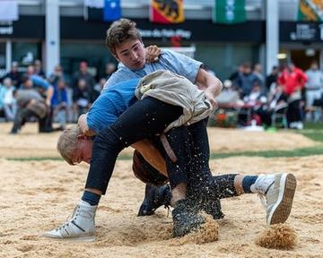
Swiss wrestling
Switzerland · Wrestling and martial sports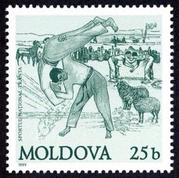
Trânta
Moldova +1 · Wrestling and martial sportsNardy
Russia · Board and table games
Classical Worlds 10
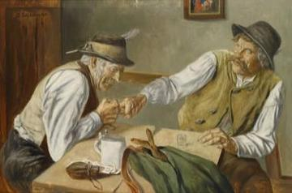
Finger Hooking
Germany +1 · Wrestling and martial sports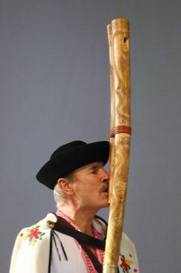
Fujara
Slovakia · Musical instruments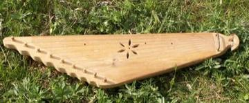
Kanklės
Lithuania · Musical instruments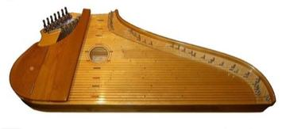
Kantele
Finland · Musical instruments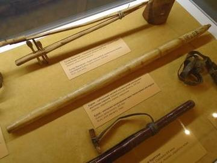
Kurai
Russia · Musical instruments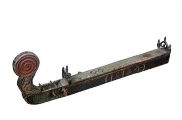
Langeleik
Norway · Musical instruments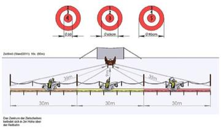
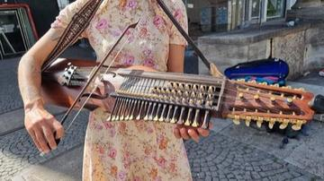
Nyckelharpa
Sweden · Musical instruments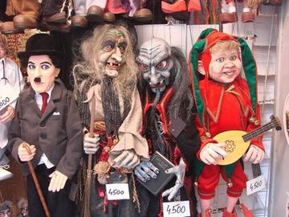
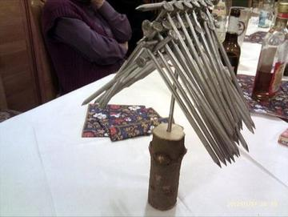
Crossroads and Golden Ages 11


Latvian Bagpipe and Folk Pipes
Latvia · Musical instruments
Novuss
Latvia +1 · Board and table games
Shashki
Ukraine +2 · Board and table games
Czech draughts
Czechia · Board and table gamesHungarian dominoes
Hungary · Board and table gamesPolish draughts
Poland · Board and table games
Age of Contact and Craft 10

Danish pin billiards
Denmark · Street and playground games


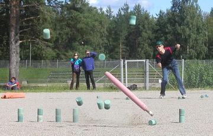
Kyykka
Finland · Street and playground games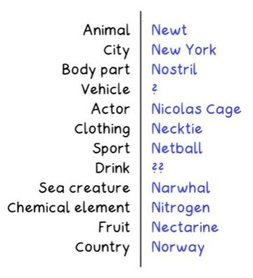
Letter Categories
Germany +3 · Racing
Oina
Romania · Bat-and-ball games
Partner-Carry Obstacle Race
Finland · Racing
Modern Heritage 14

Clockwork Movement Builder
Germany +2 · Puzzles and mind games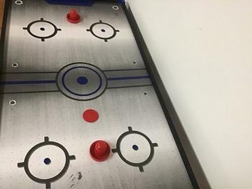
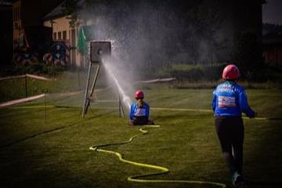
Hose-Run Fire Sport
Czechia +1 · Dexterity and skill games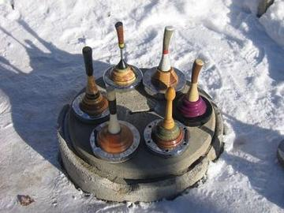
Ice Stock Sport
Austria +1 · Dexterity and skill games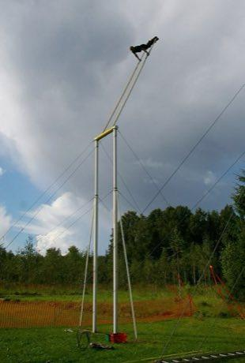
Kiiking
Estonia · Puzzles and mind games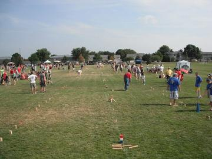
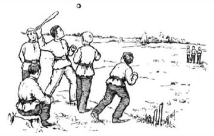
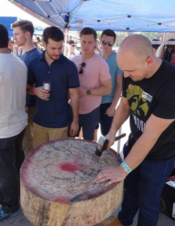
Nail driving
Germany · Dexterity and skill games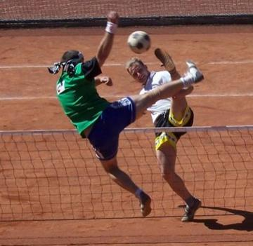
Nohejbal
Czechia · Team ball sports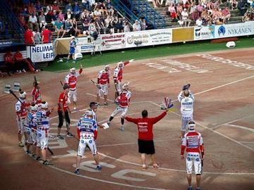
Pesapallo
Finland · Racing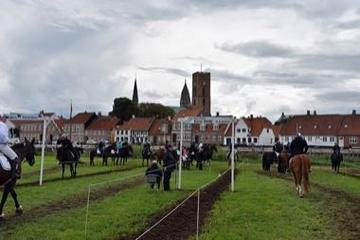
Ringridning
Denmark · Dexterity and skill games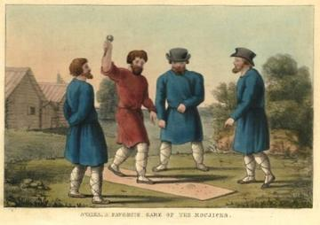
Svaika
Russia · Street and playground games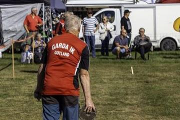
Varpa
Sweden · Dexterity and skill gamesFinger pulling
Austria · Street and playground games
Living Traditions 35
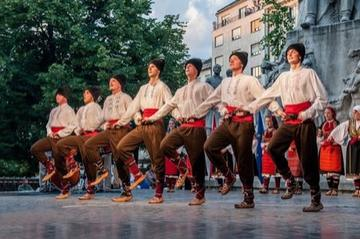
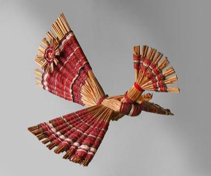
Belarusian straw weaving
Belarus · Crafts and making
Black Forest Cuckoo Clock Workshop
Germany · Crafts and making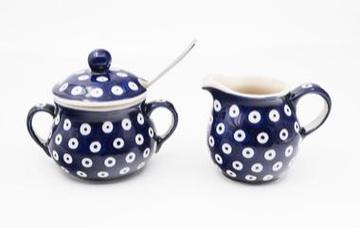
Bolesławiec Stamped Pottery
Poland · Crafts and making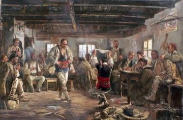
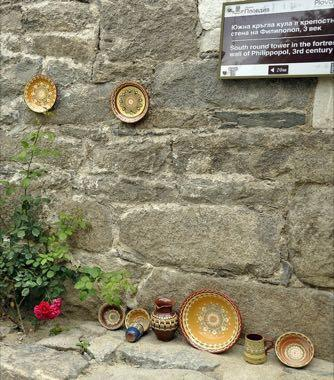
Bulgarian Painted Pottery
Bulgaria · Crafts and making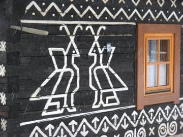
Čičmany House Ornament Painting
Slovakia · Crafts and making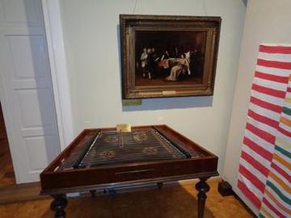
Cimbalom
Hungary · Musical instruments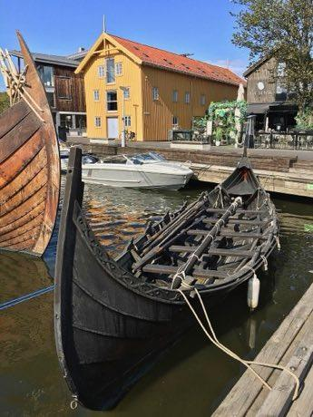
Clinker Boat Building
Norway +2 · Crafts and making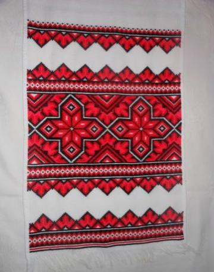
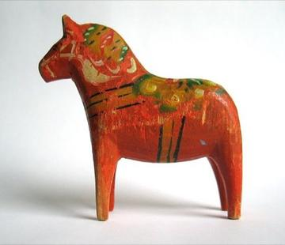
Dala Horse Painting
Sweden · Crafts and making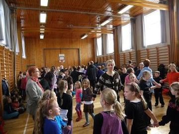
Faroese chain dance
Denmark · Dances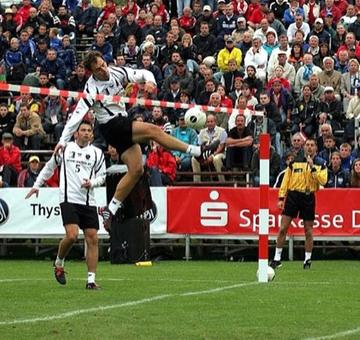
Faustball
Germany +2 · Other traditions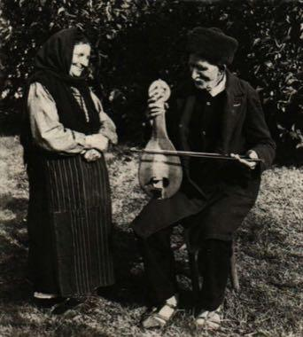
Gadulka
Bulgaria · Musical instruments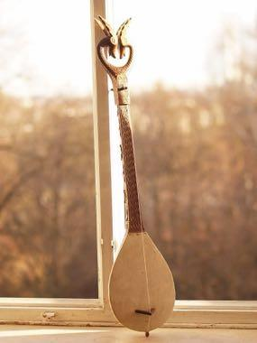
Gusle Bow and Verse
Serbia · Musical instruments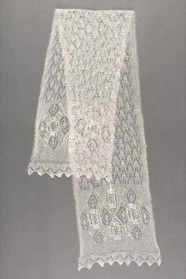
Haapsalu lace shawl knitting
Estonia · Crafts and making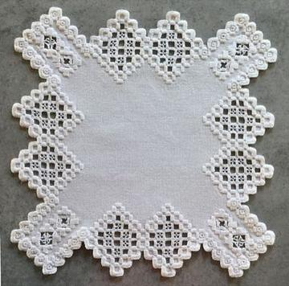
Hardanger embroidery
Norway · Crafts and making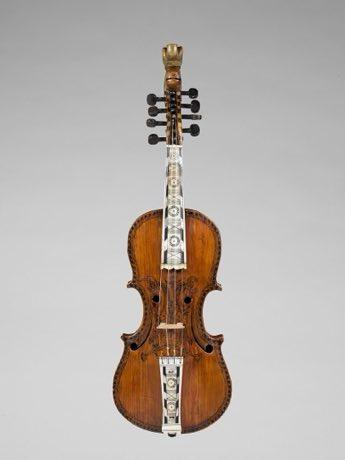
Hardanger Fiddle Halling
Norway · Musical instruments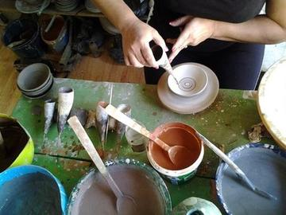
Horezu ceramics
Romania · Crafts and making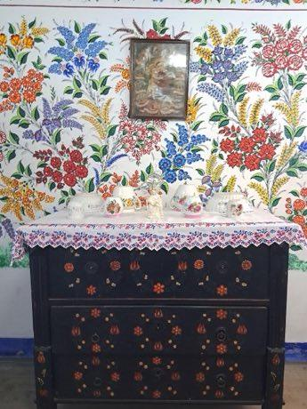
Kalocsa floral painting
Hungary · Crafts and making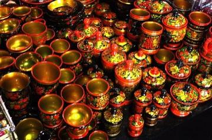
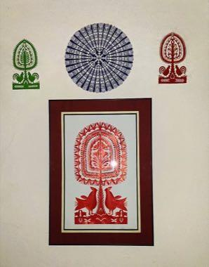
Kurpie Layered Paper Cutting
Poland · Crafts and making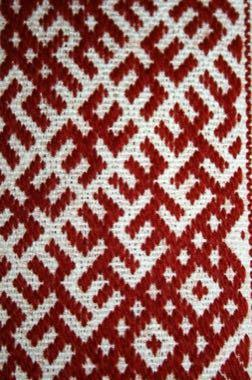
Lielvārde Sash Pattern Weaving
Latvia · Crafts and making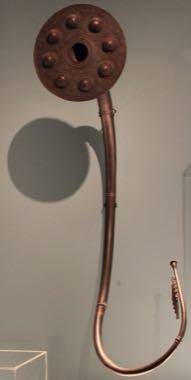
Lur pitch-and-breath game
Denmark · Musical instrumentsMoldovan Woven Carpet Pattern Studio
Moldova · Crafts and makingPaper Soccer
Poland +2 · Crafts and making
Petrykivka painting
Ukraine · Crafts and makingPirot Kilim Weaver
Serbia · Crafts and makingRosemaling
Norway · Crafts and makingSkrabalai
Lithuania · Musical instrumentsSlutsk Sash Weaving
Belarus · Crafts and makingStamp Designer and Perforator
Liechtenstein · Crafts and making
Trembita
Ukraine · Musical instruments